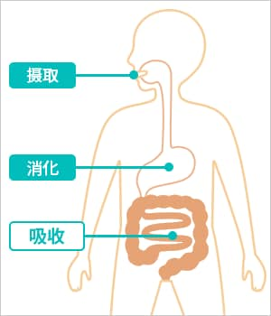

营养的本质～摄入状况与吸收机制～
日本人容易在多种营养素上出现缺乏
我们从日常饮食中摄取各种营养素。然而，根据2019年厚生劳动省实施的营养调查结果报告显示，日本人在营养摄入状况方面，包括蛋白质和维生素在内的许多营养素都存在不足问题。（表1）
关于营养的吸收机制
当我们摄入食物后，首先在胃里被消化，随后进入小肠并被体内吸收。此时未被吸收的营养素则会进入大肠，最终以排泄物形式排出。

此外，营养素的吸收机制因种类不同而异。例如，已经得到证实的有：蔬菜和水果中富含的色素成分(如β-胡萝卜素和番茄红素等类胡萝卜素)，在生食时不易被人体吸收。以胡萝卜中含有的β-胡萝卜素为例，生食时大约只有10%被人体吸收。但由于这些营养素在性质上易溶于油脂，因此在进餐时与脂质一同摄入可提高吸收率。
因此，为了使营养正确地吸收到体内，讲究合适的饮食摄取方式非常重要。
发现乳酸菌在营养吸收中的可能性
明治公司秉承“营养报国”的精神，长期以来致力于营养研究，并持续对能提高类胡萝卜素吸收率的健康食品进行验证。在研究过程中，酸奶作为具有新潜力的食品脱颖而出。研究结果发现，乳酸菌及其派生产品具有能够促进特定营养素吸收的功能。